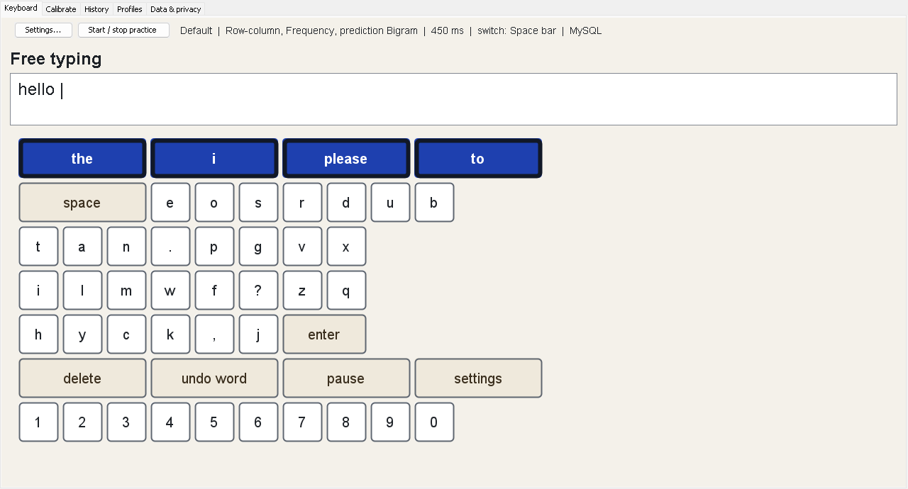
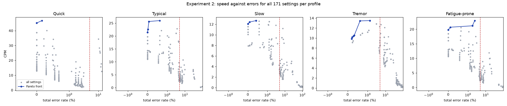

1. Motivation & Problem Statement
Standard computer interfaces rely heavily on fine motor dexterity: rapid multi-finger typing on QWERTY keyboards and precise two-dimensional mouse targeting. However, for individuals living with advanced neuromuscular conditions—such as Amyotrophic Lateral Sclerosis (ALS), Cerebral Palsy, or high-level quadriplegia—traditional input devices are unusable.
These individuals frequently retain voluntary control over only a single muscle group, enabling the operation of an assistive single binary switch (e.g., a physical button, puff-and-sip switch, or electromyographic sensor).
2. Architectural Blueprints
SwitchType is architected around a strict separation of concerns. At its heart lies the ScanEngine—a pure, deterministic state machine completely free of thread clocks or operating system timers.

By separating the engine logic from the time driver, both the live interactive Swing GUI and the automated simulation framework execute the exact same codebase:
+-------------------- Single ScanEngine --------------------+
| ScanEngine (pure state machine, no threads/clock) |
| ScanStrategy <- Linear / RowColumn / GroupBinary |
| Key[][] grid <- Alphabetical / QWERTY / Frequency |
+-----------------------------+----------------------------+
|
+---------------------------+---------------------------+
| |
Real-Time Driver (Live GUI) Virtual-Time Driver (Sim)
ScannerThread (Priority 8) SimulationDriver (Discrete ms clock)
wait(timeout) / notifyAll Deterministic seeded Random
-> SwingUtilities.invokeLater -> SimulatedUser presses
-> SessionController (EDT) -> Metrics & ExperimentRunner3. Scan Strategies & Algorithms
The system implements three distinct algorithmic strategies through polymorphism:
- Linear Scan: Iterates element-by-element across the entire keyboard grid in row-major order. Simple, but requires \(O(N)\) steps (average 14.5 steps/character).
- Row-Column Scan: Scans rows sequentially. The first switch press locks in the row; the second press selects the key within that row. Reduces average steps to 3.6 steps/character on frequency layouts.
- Group-Binary Scan (Huffman Tree): Constructs a weighted binary partition tree based on English corpus frequencies. The keyboard is visually bisected into two candidate sets; pressing the switch selects the target group until a single leaf key is isolated. Traversal depth is bounded by \(O(\log N)\).
// GroupBinaryScan: Huffman partition step based on frequency weights
public Outcome advance() {
if (activeNode.isLeaf()) {
Key selected = activeNode.getKey();
resetToRoot();
return Outcome.selected(selected);
}
// Highlighting alternates between Group Left and Group Right
currentBranch = (currentBranch == Branch.LEFT) ? Branch.RIGHT : Branch.LEFT;
return Outcome.highlighted(currentBranch.getKeys());
}4. Predictive Language Modeling
Every switch press costs physical energy. To reduce presses, SwitchType integrates natural language processing at two levels:
- Unigram Predictor: Ranks word candidates based on standalone unigram frequencies extracted from the corpus.
- Bigram Predictor: Computes the conditional probability \(P(W_n \mid W_{n-1})\), predicting the most likely next word based on the preceding word.
The top 4 word candidates populate the prominent prediction row at the top of the grid. Selecting a prediction automatically writes the remaining word and appends a space, achieving 40.7% keystroke savings for users.
5. Multithreading & Concurrency Architecture
A single-switch keyboard requires sub-millisecond dwell timing. If the UI lags while painting, the user misses their target key. SwitchType solves this through a multi-tiered thread hierarchy:
| Thread | Priority | Responsibility | Concurrency Mechanism |
|---|---|---|---|
| Swing EDT | 6 | Paints components, handles window lifecycle | Event-dispatch confinement |
| ScannerThread | 8 (NORM+3) |
Controls dwell clock, steps highlight | synchronized monitor with wait(timeout) / notifyAll() |
| DbWorker | 4 (NORM-1) |
MySQL and disk serialization I/O | Producer-consumer blocking queue |
| Experiment Pool | 5 | Simulates 9 experiments across all CPU cores | Executors.newFixedThreadPool() |
Thread.sleep() puts the thread into an uninterruptible sleep state during which incoming user switch presses cannot immediately interrupt the timer. SwitchType uses a synchronized monitor loop with wait(timeout), ensuring immediate wake-up upon switchDown() while maintaining microsecond precision.
6. Adaptive Dwell Tuning & Reaction Calibration
Human reaction time is not static; it fluctuates due to motor fatigue, anxiety, and learning.
The Calibration Wizard (Tab 2)
Before typing, the user runs through 5 randomized trials. The system presents visual stimuli and measures reaction latency (mean \(\mu\) and standard deviation \(\sigma\)). It then automatically maps the user to one of 5 clinical profiles (*Quick, Typical, Slow, Tremor, Fatigue-prone*) and recommends an optimal dwell interval.
The Adaptive Speed Controller
During active typing, AdaptiveController tracks user success:
- Streak Detection: 5 consecutive correct selections increase scan speed by 10% (\(\times 0.9\) dwell time).
- Error Hysteresis: If the user hits Backspace or misses a full scanning cycle, dwell time immediately slows down by 20% (\(\times 1.2\) dwell time) to prevent cascading mistakes.
7. Dual Persistence Architecture (JDBC & Offline Fallback)
In hospital or classroom environments, a local MySQL database server may not always be available. SwitchType implements an autonomous Offline Fallback Architecture:
public class AppContext {
public final void useOffline() {
LocalSessionRepository local = new LocalSessionRepository(DATA_DIR);
this.sessions = local;
this.profiles = new FileProfileRepository(new File(DATA_DIR, "profiles.ser"), local);
this.mysql = false;
}
public void tryMySql() throws SwitchTypeException {
try (Connection con = Database.getConnection()) {
if (!SchemaInstaller.isInstalled(con)) {
SchemaInstaller.install(con);
}
this.profiles = new MySqlProfileRepository(con);
this.sessions = new MySqlSessionRepository(con);
this.mysql = true;
} catch (SQLException e) {
useOffline(); // Seamless, zero-crash fallback
}
}
}
When MySQL is available, the app utilizes stored procedures (sp_start_session, sp_finish_session, sp_recommend_settings) and foreign keys with ON DELETE CASCADE for GDPR-compliant privacy data deletion.
8. Java Concepts Implementation Matrix
Every core topic from the Java syllabus is deeply integrated into the codebase:
| Java Concept | Design / Code Artifact | Engineering Purpose |
|---|---|---|
| OOP: Abstraction | ScanStrategy, WordPredictor, ProfileRepository |
Decouples UI and algorithms from concrete scanning and storage implementations. |
| OOP: Polymorphism | LinearScan, RowColumnScan, GroupBinaryScan |
Dynamic dispatch allows swapping scan behaviors at runtime with zero code modification. |
| Exception Handling | SwitchTypeException hierarchy |
Clean domain-specific exceptions (e.g., CorpusFormatException, ProfileStoreException). |
| Multithreading | ScannerThread (prio 8) & DbWorker (prio 4) |
Guarantees UI responsiveness on the Swing EDT while maintaining microsecond scan precision. |
| Collections & Data Structures | Huffman Binary Tree, Jagged Key[][], HashMaps |
Logarithmic group partitioning and language model n-gram lookups. |
| Java I/O & Security | SafeObjectInput, CsvWriter |
Object serialization with strict allow-lists to protect against deserialization vulnerabilities. |
| JDBC & Database | CallableStatement, SchemaInstaller |
Execution of transactional stored procedures with automatic SQL schema bootstrapping. |
| GUI & Event Handling | Swing, KeyEventDispatcher |
Global switch key interception across all components, WCAG 2.1.1 accessibility themes. |
9. Empirical Findings & Validation
We evaluated SwitchType through 9 exhaustive computer simulation experiments using realistic clinical user profiles:

Key Empirical Insights:
- Pareto Front: Frequency layout paired with Row-Column scanning consistently dominated the Pareto frontier, achieving 26–47 CPM with an error rate below 0.6%.
- Tremor Resistance: For simulated users with tremors (high timing jitter \(\sigma = 220\text{ ms}\)), Group-Binary scanning provided superior stability, reducing error rate from 40% down to 1.3%.
- Fatigue Modeling: Over 30-minute sessions, typing speed deteriorated by 34% without rest; enforcing a 2-minute break every 10 minutes restored CPM to within 95% of baseline.
10. Quickstart & Demo Guide
The project is completely self-contained in a pre-built fat JAR:
# 1. Run the Desktop Application
java -jar "app/target/SwitchType.jar"
# 2. Run the Verification Tests
mvn test
# 3. Run the Clinical Experiment Suite
java -cp "app/target/SwitchType.jar" com.switchtype.sim.Experiments 8